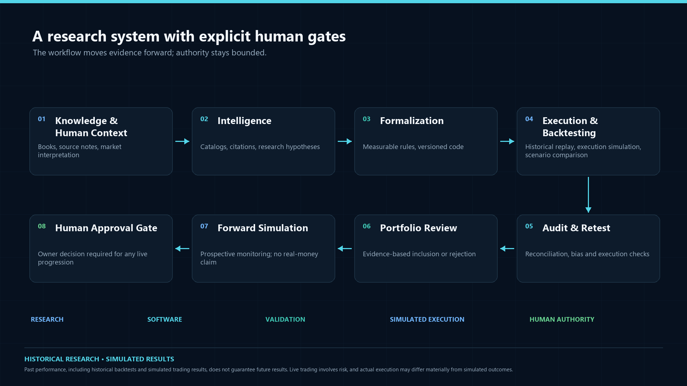
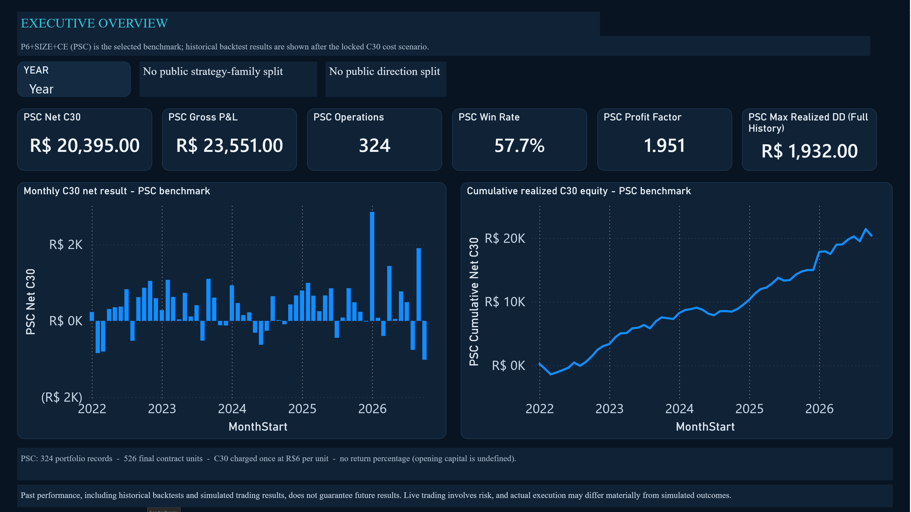

Intelligence
Interpret concepts, preserve references, frame hypotheses.
RESEARCHQuantitative research engineering
From Price Action knowledge to systematic quantitative research.
I developed Project Vortex to investigate whether discretionary Price Action concepts could be defined precisely enough for systematic testing. AI agents supported research, implementation and analysis across historical experiments. The market data cover 2022 to 2026; this is distinct from the project development timeline.
Independent research portfolio | No live signals or investment service

Research question
A setup described in a book still needs explicit context, timing and invalidation rules before it can be tested causally.
AI agents increased the pace of implementation and testing. Market interpretation, review of evidence and research decisions remained human responsibilities.
01 Knowledge & intelligence
The Intelligence work organized Price Action references and research artifacts for consultation and review. Document extraction does not train a model or turn books directly into executable strategies.
Source manifests, checksums, page-referenced notes, versioned research documents, catalogs and decision records provide traceability.
The repository contains PDF page-extraction and SQLite FTS5 search utilities alongside versioned research documents. Coverage varies by source and page; extraction alone does not establish complete understanding.
The inspected Intelligence workspace did not contain a populated local search index. The available evidence supports document processing and search utilities, not a production RAG system or universal agent access to the source library.
Visual examples often leave timing, context and opportunity quality implicit. I supplied market context and reviewed proposed interpretations before concepts were formalized as measurable rules.
Consulting stored documents and structured notes is not model training. No fine-tuning or vector database implementation was found in the verified repository.
02 Autonomous research pipeline
AI agents supported market research, implementation, historical testing, risk analysis and audit. Work moved through versioned code, implementation requests, test outputs and recorded decisions, reducing repeated handoffs while keeping strategic acceptance under human review.
Interpret concepts, preserve references, frame hypotheses.
RESEARCHTranslate reviewed hypotheses into testable code.
SOFTWARERun historical data and compare cost scenarios.
EXPERIMENTReview causality, execution assumptions and evidence.
VALIDATIONEvaluate candidate versions against separate benchmarks.
SELECTIONI reviewed whether the evidence supported the next step. Agents had no authority to place live orders.
OVERSIGHTThe agents helped me run parallel experiments and repeat implementation work. Strategic acceptance and any move toward live capital remained subject to human review.
03 Historical portfolio performance
P6+SIZE+CE (PSC) is the selected reconciled historical backtest. P6 is reported separately; the recorded periods end on different dates and are not a like-for-like comparison.
Loading sanitized portfolio aggregates…
Only months with recorded portfolio activity are shown. Hover a bar for the monthly result and record count.
Running sum of monthly aggregates; this is not an account equity curve or trade-order path.
Cost applied once. Net is stored as (gross points − 30) × final units × R$0.20. No second cost deduction is applied.
Drawdown is peak-to-trough decline. The full-history card uses realized close-order data. M5-close and adverse OHLC sensitivity are described separately.
No return percentage. Opening capital is undefined, so the site reports currency results, not an assumed ROI.
04 Trade case studies
The gallery presents six verified winners and two completed losses from the frozen case set. Charts retain recorded candle geometry and higher-timeframe context where available; sensitive timestamps, price scales, strategy identifiers and individual results are redacted.
These examples illustrate case review. They are not representative of the full trade distribution and do not establish profitability.
Featured historical case study
A separate research backtest records an initial one-contract WIN long, a market retracement, and a distinct one-contract add-on. Replay the full available M5 session, from its opening bars through the trade and beyond the exit.
The historical replay could not be loaded. Please reload the page.
Drag to pan · Use the wheel or pinch to zoom · Hover or tap a candle to inspect OHLC
Loading historical candle data.
This is a separate exploratory historical backtest case, not a trade from the PSC portfolio benchmark, Paper Live, or a live account. The frozen event ledger records two distinct one-contract simulated legs. A confirmed pullback touch precedes the add-on; the replay uses the full available 107-bar session, including 39 candles after the modeled exit.
The underlying source is continuous adjusted PRICE_ONLY M5 OHLC. The displayed source-session clock runs from 09:00 to 17:50, but its timezone is unauthenticated and these labels are not certified B3 local timestamps. The bars do not certify bid/ask quotes, executable fills, or intrabar sequencing. Fill events are revealed after their associated five-minute candle is complete to avoid showing that candle's high, low, or close before it would be available. The price axis is translated; candle geometry remains recognizable and may be correlated with public market data.
The source study sets WIN's minimum tick to five index points, but this case's recorded research-model prices are not all on that grid. Entry 1 is grid-aligned; Entry 2 and the modeled exit are not. The translated public values preserve those grid residuals. The 20-cent remainder arises from exact model arithmetic: 2,027 + 1,724 = 3,751 points, and 3,751 × R$0.20 = R$750.20. It is not a currency-rounding issue. Because the price source is adjusted continuous OHLC and lacks certified contract quotes, the result is an adjusted-price model output, not tick-valid B3 performance. No fills have been rounded or snapped; that would require rerunning the strategy against a verified unadjusted contract series.
The S2 research stress scenario deducts R$6 per modeled contract: R$2 round-trip brokerage plus two adverse ticks per side (20 points total) at R$0.20 per point. Other fees are excluded by the source study. This cost assumption does not make the off-grid model fills executable, and S2 is not the portfolio's C30 cost model.
Selected historical backtest example. This operation is not representative of all trades. Past performance, including historical backtests and simulated trading results, does not guarantee future results. Live trading involves risk, and actual execution may differ materially from simulated outcomes.
Portfolio context and risk definitions: Project Vortex Power BI showcase. Chart engine: TradingView Lightweight Charts.
05 Engineering & validation
Historical testing required careful control of chronological data availability, execution costs and portfolio risk. Versioned experiments and audit records made it possible to compare hypotheses, investigate failures and reproduce reported results.
About this project
My professional background is in Business Intelligence and Data Engineering, with experience using SQL Server, Python, SSIS and Power BI. I established the research direction and contributed Price Action interpretation and technical requirements. AI agents supported knowledge organization, hypothesis development, implementation and testing; research decisions and validation remained subject to human review.
Connect with me on LinkedInRules must use information available at decision time. Replay tests and audits help identify future-data leakage, timing assumptions and inconsistent source bars.
Gross results and the locked C30 net scenario remain separate. Cost application is reconciled to the final position size and recorded once.
Portfolio registries, strategy catalogs, trade ledgers, versioned code and decision records connect headline metrics to their source evidence.
AI supported research and implementation across workstreams. People corrected ambiguous context, reviewed candidate changes and retained approval authority.
Each transition requires evidence. Historical success alone does not establish readiness for real capital.
06 Power BI analytics showcase
The public 14-page PBIP brings together approved portfolio aggregates, DAX measures and risk analysis. P6 and PSC remain separate, and individual trade ledgers are excluded.
Public aggregate-only 14-page PBIP opened and refreshed in Power BI Desktop. Individual trade records and raw market bars remain excluded.
Companion source: Project Vortex BI showcase on GitHub.

Native Power BI Desktop capture. The model uses approved aggregate data and excludes private trade-level records.
14 Power BI report pages — 14 verified screenshots.
Pages 04 and 05 are shown with the P6+SIZE+CE (PSC) portfolio selected. Case-study pages show selected historical examples, not a representative performance sample.
07 Research status & limitations
The performance figures are historical backtest results. Forward validation is simulated; no Paper Live P&L series or real-money result is presented here.
P6+SIZE+CE portfolio results are reconciled to the registered source records under the locked C30 method.
Prospective validation is not real-money trading. No session P&L is claimed by this public showcase.
Any move toward live capital requires separate human review and authorization. No automatic progression is implied.
Risk disclosure
Past performance, including historical backtests and simulated trading results, does not guarantee future results. Live trading involves risk, and actual execution may differ materially from simulated outcomes.